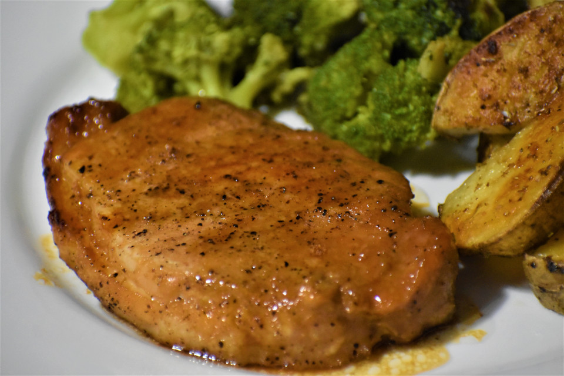

Description:
Honey glazed...pork chops?
Ingredients:
- 5 (1 inch thick) boneless pork chops
- 1 teaspoon of salt
- 1 teaspoon of ground black powder
- 1 teaspoon of garlic powder
- 1 tablespoon of olive oil
Glaze:
- 1 cup of honey
- 1/4 cup of brown sugar
- 1/4 cup of soy sauce
- 2 teaspoons of chopped garlic
- 2 tablespoons of butter
- 1/4 teaspoon of ground ginger
- 1 dash cayenne pepper, of to taste
Steps:
- Preheat the oven to 350 degrees F (175 degrees C).
Grease a 9x13-inch baking dish.
- Season pork chops with salt, pepper, and garlic powder.
Heat olive oil in a skillet over medium heat.
Brown pork chops 3 to 4 minutes per side.
Transfer to the prepared baking dish.
- Whisk honey, brown sugar, soy sauce, garlic,
and butter together in a bowl and pour over the
pork chops in the baking dish.
- Bake in the preheated oven for 25 minutes.
Remove from oven and let pork chops sit in the
baking dish 5 minutes more to soak up juices.
- Serve pork chops topped with extra sauce.
Link to webpage:
Link